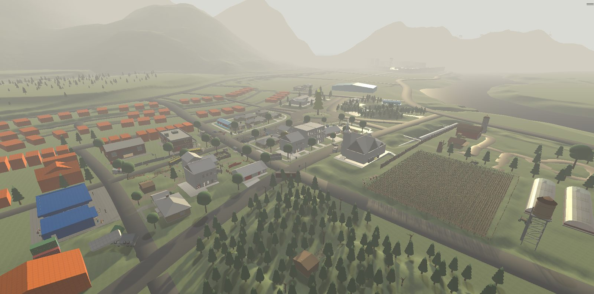
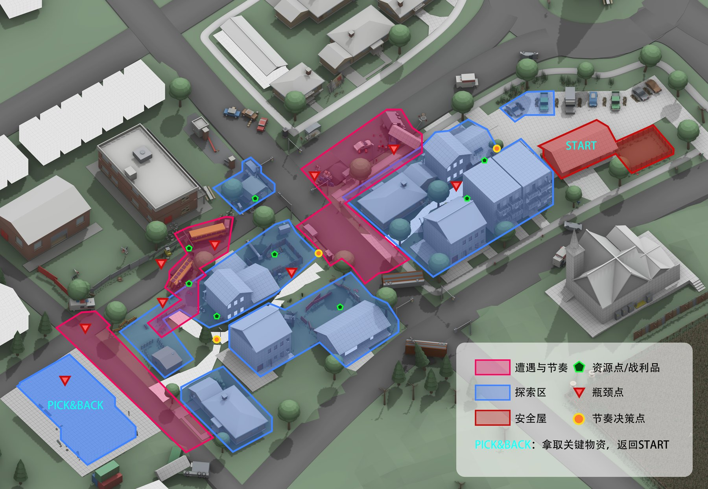
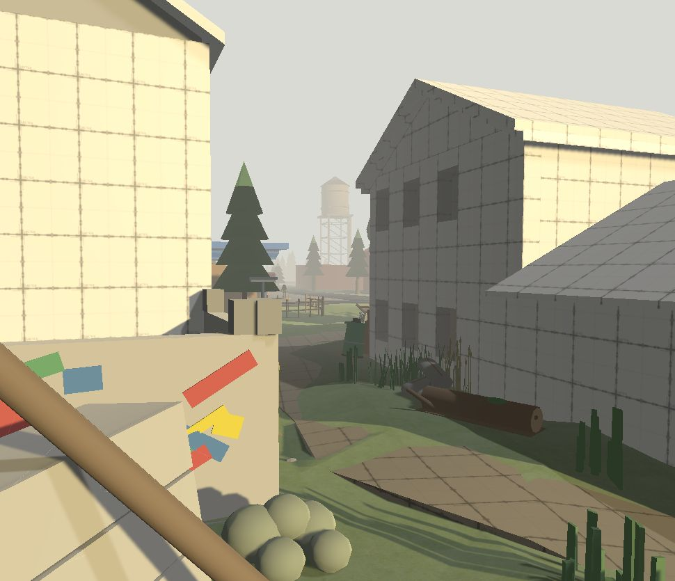
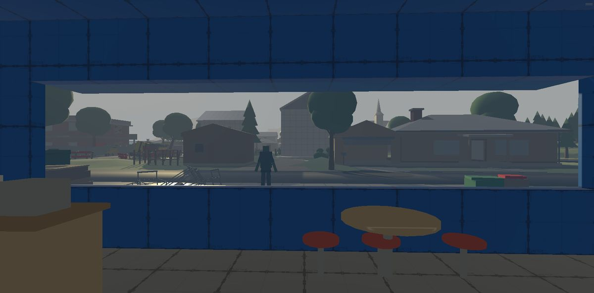
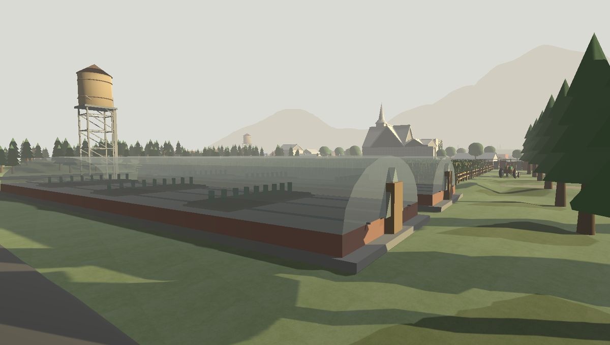
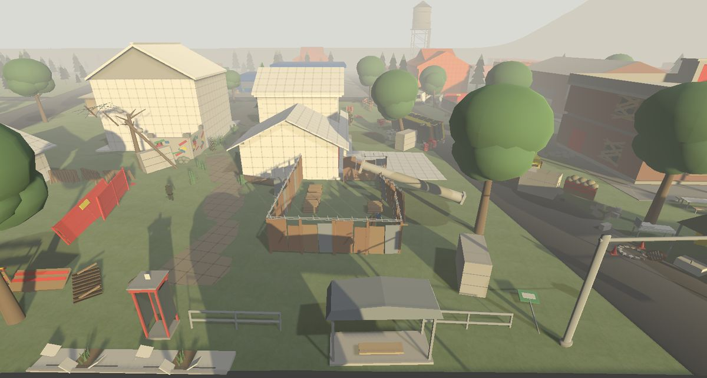
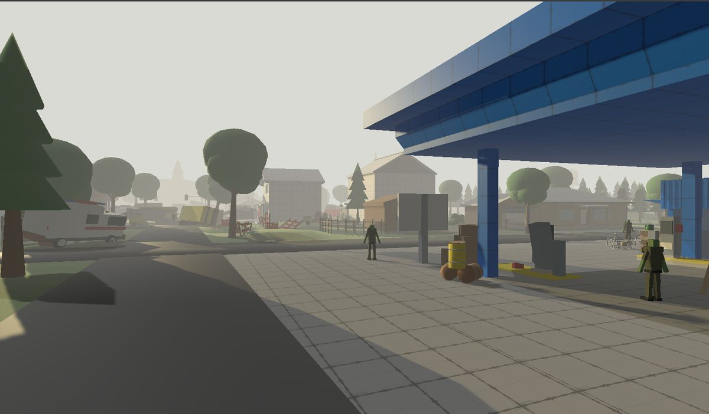
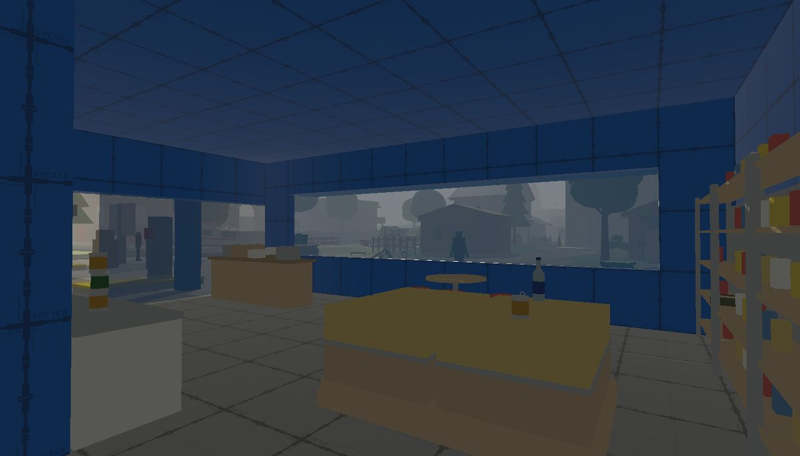
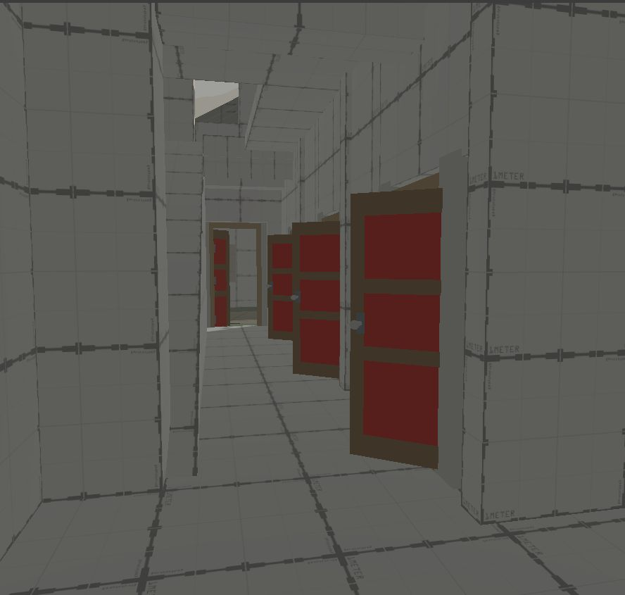

主线一 · 主街直行
视野开阔 · 方向清晰 · 遭遇直接
沿主街往返加油站。这条路线承担方向教学的职能：视野开阔、可参照物多， 玩家在认知负担最低的情况下读懂街区的方向和尺度。主街瓶颈处收窄通行宽度， 引导视线朝向预设方向，把「正面遭遇」放在视线相对可控的位置。
$ 开放世界 · 生存 · 探索 · 白盒关卡
该项目主要展示第一节任务的探索。

1 / 4任务目标 · Objective
Haven House 的备用发电机已经停止工作。玩家必须前往 Miller's Fuel 搜寻燃油， 避开住宅区的感染者，并把燃油带回安全屋。
当发电机重新启动，屋内一盏昏暗的灯亮起。远处通往军事基地的断桥依然沉在黑暗里—— 它提醒玩家，恢复一栋房子的供电，只是第一步。
以丧尸灾变后的现代小镇为背景，尝试通过住宅区、资源兴趣点与安全屋之间的空间关系， 组织一段具有探索目标与风险选择的生存关卡体验。
设计的核心问题是：不给 UI 引导，玩家怎么知道该往哪走？ 答案落在空间本身——路网是否读得懂、地标轮廓是否够远可见、 资源与危险的分布是否让「多走一步」变成一个有代价的决定。
白盒在 Unity 中搭建，建筑体量与道路使用 ProBuilder 建模， 布局图与标注图用 Photoshop 绘制； 可搜刮物资系统的图标与游戏内展示使用同一套程序生成的白盒资产。
项目仍在制作中。具体玩法机制与测试结论将在实现和验证后补充。
组织住宅区、加油站等核心空间与道路连接关系。
围绕安全屋至加油站的资源搜集任务，设计探索路径。
结合兴趣点危险程度、资源价值与撤离路线形成决策。
在 Unity 中检查空间尺度、路径可读性与实际行走体验。
小镇关卡的总览俯视：图中标注了住宅巷、学校、教堂、加油站等兴趣点， 以及主线的行进路线与瓶颈、资源分布。 点下面的标记，查看每个位置的设计说明与多张实景截图。
这张分析图把任务拆成两层：往哪里走（探索），以及在哪停下来做决定（节奏）。

Unity 白盒阶段的俯视全景：住宅组团、镇中心、环路与农场一起构成小镇的骨架。 标记按资源与风险分色，点开可看各区域的空间关系说明。
白盒关注的是空间关系而不是美术表现：建筑体量先按尺度与朝向摆出来， 验证路网是否成立、体量是否能承担方向感。镇中心的密集街巷与周边的农场 形成「密 — 疏」两种空间密度，对应不同的探索节奏。
三个真实的站立位置：玩家站在那里能看见什么、被挡住什么。 关卡里的方向感不是靠 UI 箭头给的，而是靠这些看得见的轮廓撑起来的。



把边界说清楚：哪些已经在 Unity 白盒里落地，哪些还停留在设计设想—— 后者会在实现与测试后补充结论。
以下是项目的设计规划，用于指导后续白盒迭代方向； 当前尚未全部实现，落地后会随测试补充结论。
先恢复必要设施的供电与运作，再从住宅区往返超市持续探索， 之后推进到工业区——形成主岛上探索、建造、生存与 PVE 遭遇的基础循环。
主岛任务完成后，修理主岛与外岛之间的断桥，前往外岛山顶军事基地。 修理物资由多个部分组成、分布在主岛各重要 POI，驱动玩家在探索中持续收集。
各 POI 与路径上的丧尸数量和攻击性随游戏时间推移逐步增强，但非线性增长—— 难度随游戏进程与玩家物资储备递进。夜晚丧尸更多、更强，探索成本随之上升。
白盒迭代验证中发现：区域推进后物资难以随进程大规模迁移。设定仓库 可在不同区域间零距离传输物品，以此引导玩家的建造与收集行为。
探索阶段链 恢复设施供电 → 住宅区 ↔ 超市（主区白盒布局图右上角白色体块）→ 工业区 → 收集断桥修理物资 → 修理断桥 → 外岛军事基地（终局探索）
这张图的可走区域比较自由，路线不是唯一走法。我在布局上明确了两条主路线， 作用是引导玩家去体验不同空间形成的遭遇与氛围：一条把视野打开、把方向讲清楚， 一条把空间收紧、把压力加上去。
视野开阔 · 方向清晰 · 遭遇直接
沿主街往返加油站。这条路线承担方向教学的职能：视野开阔、可参照物多， 玩家在认知负担最低的情况下读懂街区的方向和尺度。主街瓶颈处收窄通行宽度， 引导视线朝向预设方向，把「正面遭遇」放在视线相对可控的位置。
空间收紧 · 氛围紧张 · 高风险高收益
从主街拐入住宅巷，在细碎的室内外空间之间穿行。这条路线把空间收紧、 视线压短，营造「不知道下一个转角有什么」的紧张感；对应地， 这里的资源价值最高——玩家用空间体验上的压力换取搜刮收益。
除两条主路线外，街背与农田方向同样连通可自由探索。引导的意义在于让玩家感受到空间差异， 而不是限制他们的选择；实际路线选择有待实现后测试验证。




下表是各兴趣点的资源与威胁规划，属于设计意图—— 让每一次弯腰捡拾都对应一次真实的取舍，具体数值待实现后验证调整。
| POI | 资源投放 | 威胁设想 | 玩家要做的取舍 |
|---|---|---|---|
| 起点 · 安全屋 | 基础物资、主线目标（发电机） | 无 | 出门前带多少消耗品 |
| 住宅巷（两片） | 医疗、工具、弹药（价值最高） | 感染者密度最高 | 深入几栋：多搜的收益 vs 回程的弹药与体力 |
| 学校 | 中等资源、大空间搜索 | 中等 | 大房间搜得快但暴露久 |
| 教堂 | 补给 | 较低 | 绕行顺路补给 vs 直线赶路 |
| 加油站（任务目标） | 主线燃油、补给 | 前场开阔、室内掩体 | 先清场还是拿了就跑 |
落地探索流程链与难度递进、昼夜循环设定，用实际试走验证多路线取舍与探索节奏，补充测试结论与演示视频。
为搜刮玩法设计的一套资源系统：6 大分类 · 36 种物资 · 3 档稀有度。 全部模型为程序生成的低多边形白盒资产，图标由同一套模型批量渲染，与游戏内展示完全一致。
设计上让稀有物资承担「惊喜奖励」而非硬性门槛：常见物资保证每个搜刮点的资源下限， 高稀有度道具（收音机、门禁卡、防毒面具）则引导玩家主动走向风险更高的路线。